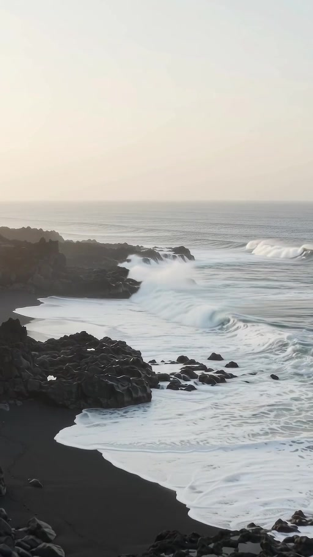
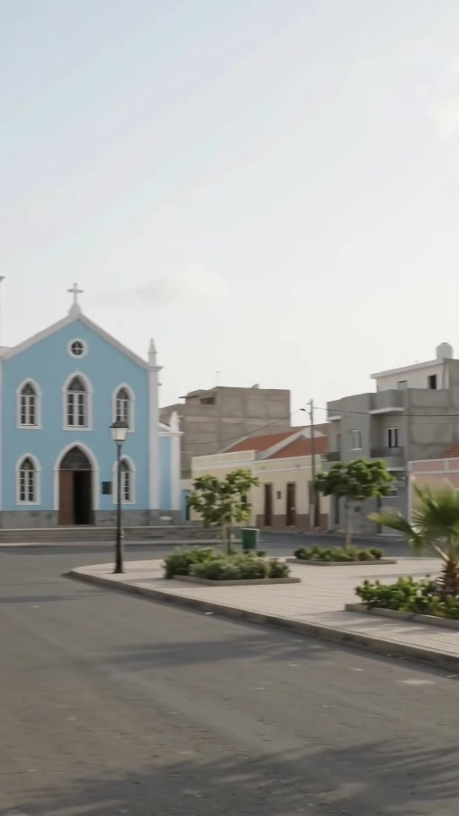
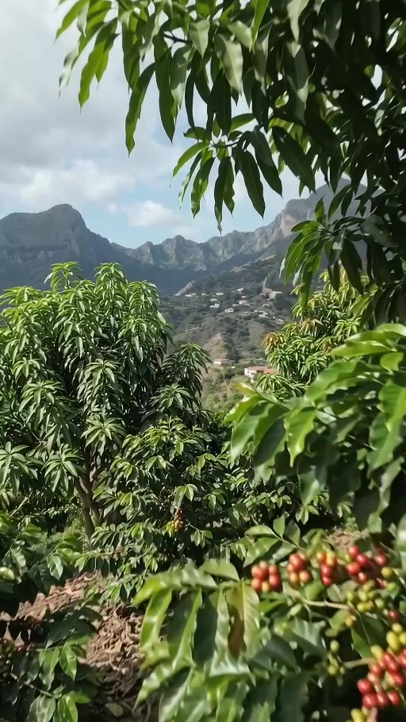
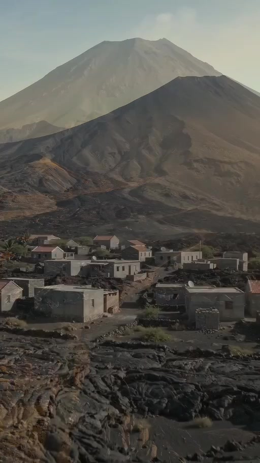
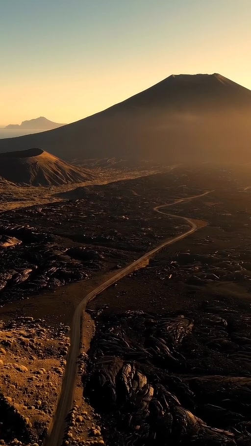
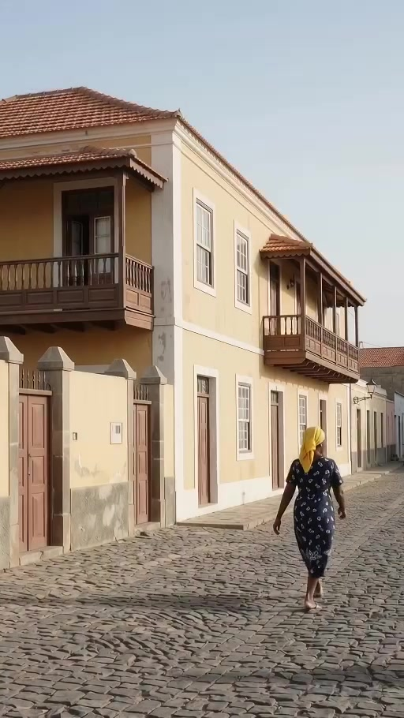
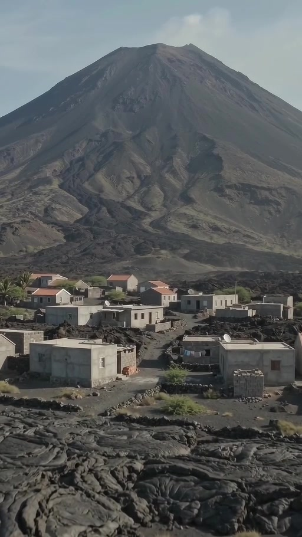
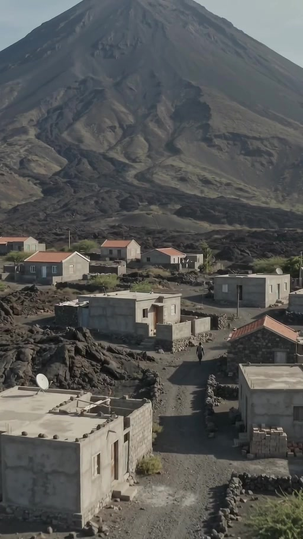
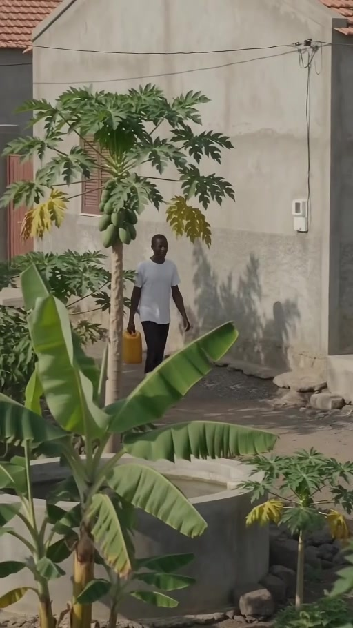

Local Reality
Coffee cultivation and fruit trees are concentrated in greener mountainous zones, with terrain descending through communities toward the coastal town.
Cape Verde · Timas Motion
A research-grounded cinematic interpretation of Fogo Island, Cape Verde.
Independent Creative Case Study. Developed as a self-initiated Timas Motion project using research, local-reference validation, human creative direction and AI-assisted production.
01 — The Challenge
How do you tell the story of an island shaped by a volcano without reducing it to the volcano itself?
Fogo is defined by contrast. Black volcanic landscapes coexist with agriculture, historic architecture, mountain communities and everyday life. The challenge was to translate that diversity into a cinematic visual narrative while keeping the island recognizable and grounded in local reference.
The challenge was not to reinvent Fogo. It was to reveal it.


02 — The Insight
The strongest story was already there. It did not need to be invented.
Fogo’s identity comes from the relationship between land, communities, cultivation, architecture and the Atlantic. That insight changed the role of AI: instead of inventing a more dramatic island, each visual decision had to remain connected to recognizable local reference.
AI could enhance light, composition and atmosphere. But local reference had to remain the filter.

03 — The Concept
Fire shaped the island. Life gave it meaning.
04 — Creative Direction
Elevated in presentation. Believable in place.

AI supported the cinematic interpretation. Local reference remained the filter.
05 — Research & Reality Framework
The goal was not simply to find beautiful references. It was to keep Fogo recognizable.
Coffee cultivation and fruit trees are concentrated in greener mountainous zones, with terrain descending through communities toward the coastal town.
Early interpretations could become too tropical, too lush, too flat, or disconnected from the geographic link between upper slopes and the coast.
Vegetation was localized, mountainous relief was reinforced, cultivation was refined, and the relationship between communities, slope and coastline was restored.
A cinematic interpretation that preserves recognizable geographic character without presenting the image as documentary photography.
Could this realistically belong to Fogo?
06 — The Production

Believability mattered more than spectacle.
07 — The Edit
Individual scenes became a connected journey through rhythm, sequence, contrast and sound.




Not simply a story about a volcano. A story about the life that exists around it.
08 — The Final Film
Built around local reference, contrast and identity.
FOGO. CINEMATICALLY TOLD.
09 — The Outcome
A repeatable creative methodology emerged from the project.
The project does not present AI-generated scenes as documentary photography. It presents a research-grounded cinematic interpretation of Fogo, developed through local-reference validation and human creative direction.
FOGO. CINEMATICALLY TOLD.